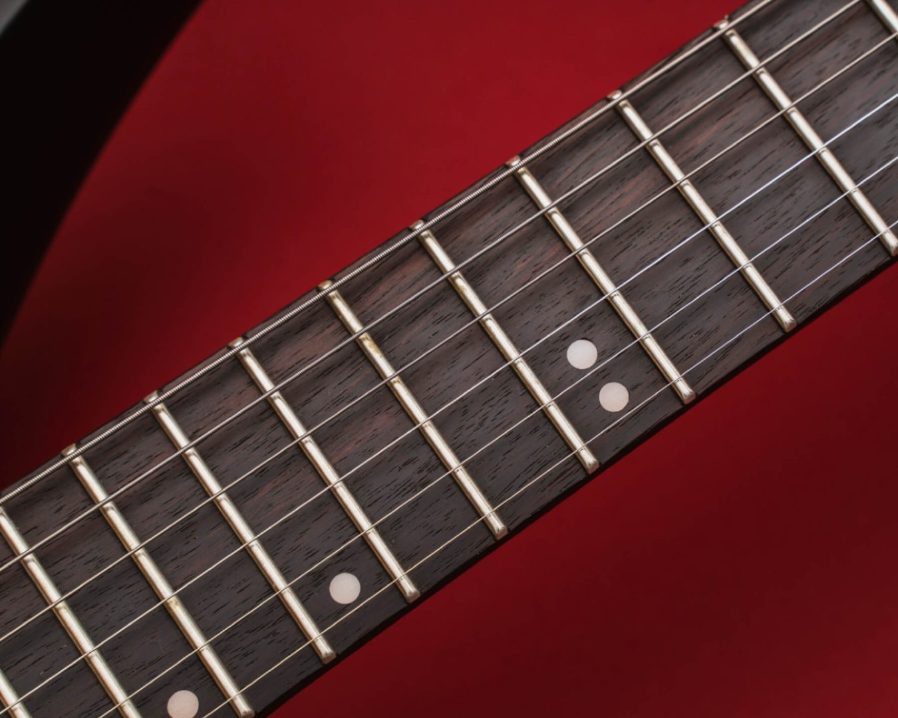

14 de mayo de 2026Guía básica: Cómo cuidar el diapasón de tu guitarra en invierno
Los cambios bruscos de temperatura y humedad pueden descalibrar tu instrumento. Descubre qué aceites usar y con qué frecuencia limpiar la madera para mantener un tono óptimo.